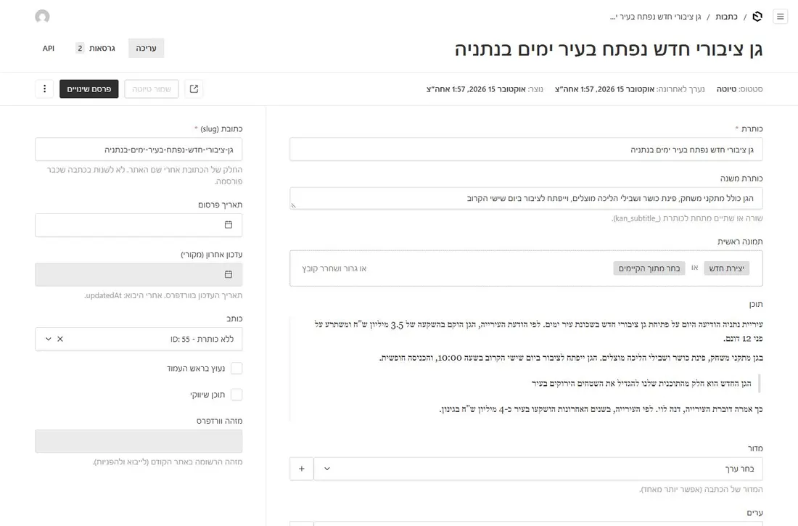
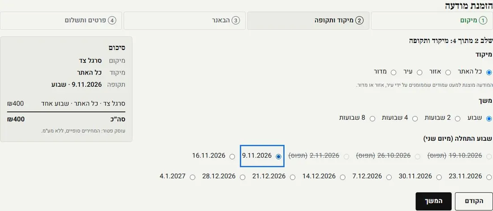
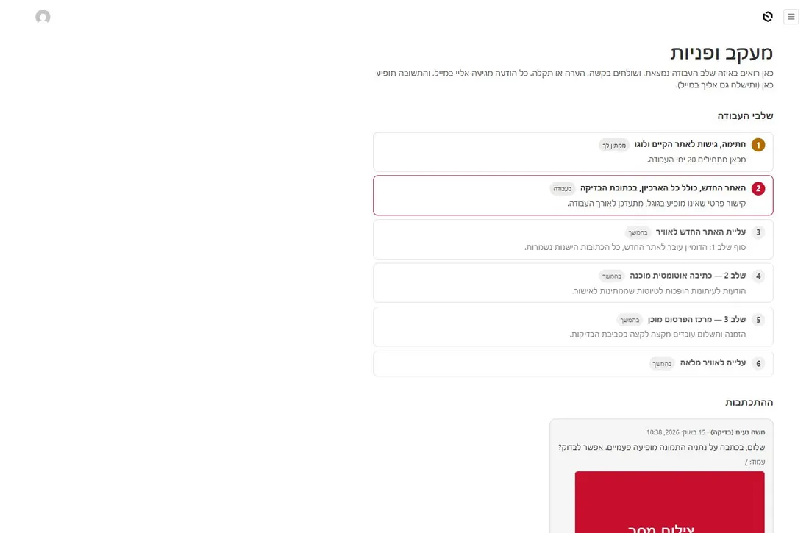
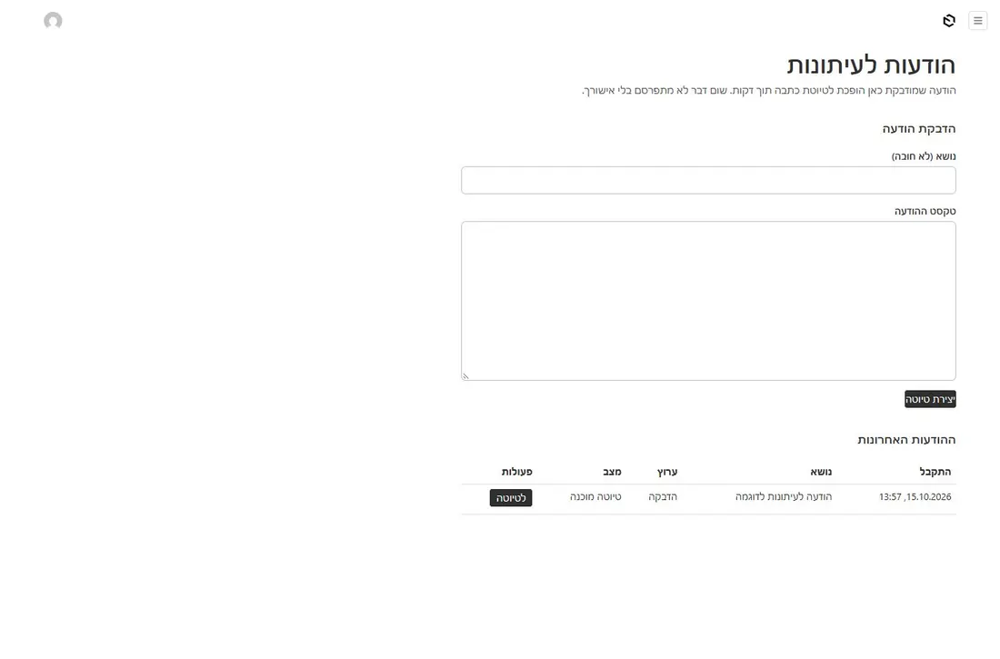

כאן ישראל
סיור של שתי דקות
משה, ככה ייראה
משה, ככה ייראה
כאן ישראל החדש
אתר מהיר, נקי ומודרני, שנבנה במיוחד בשבילך ובשביל הקוראים שלך — עם כל הכתבות מאז 2002, באותן כתובות בדיוק, וממשק כתיבה פשוט שנוח לעבוד איתו כל יום.
3עיצובים לבחירת הקורא
27,000+כתבות, באותן כתובות
172דפי ערים ויישובים
24/7גיבוי ושמירה על האתר
1
שלושה עיצובים, אתר אחד
כל קורא בוחר את הסגנון שנוח לו — קלאסי, דיגיטלי או מגזין לילה. התוכן אותו תוכן, ואתה כותב פעם אחת בלבד. לחץ ונסה:
זה האתר החדש באמת, עם הכתבות שלך. אפשר לגלול ולדפדף בתוכו, או לפתוח אותו בחלון מלא.
2
רוב הקוראים שלך — בטלפון
האתר נבנה קודם כול לטלפון: אותיות גדולות וברורות, תמונות שנטענות מהר, ותפריט נוח לאגודל.
- התמונות שלך מוצגות בשלמותן — בלי חיתוך של הכותרת או הלוגו
- כל הכותרות ברשימות באותו גובה, כמו שביקשת
- נגיש לבעלי מוגבלויות, לפי התקן הישראלי
- שיתוף מהיר לוואטסאפ ולפייסבוק מכל כתבה
3
מהיר יותר — וגוגל אוהב את זה
מדדנו את האתר הנוכחי ואת האתר החדש באותו כלי של גוגל, בבדיקת טלפון. אתר מהיר מקבל יותר קוראים מגוגל, והקוראים נשארים יותר זמן — במיוחד בטלפון ובחיבור סלולרי.
ציון מהירות (מתוך 100)
האתר היום
–
האתר החדש
–
זמן עד שהכתבה מופיעה
האתר היום
–
האתר החדש
–
משקל עמוד הבית (פחות = מהיר יותר)
האתר היום
–
האתר החדש
–
נמדד בכלי Lighthouse של גוגל, בהדמיית טלפון.
4
ככה תכתוב כתבה — נסה בעצמך
בלי עשרות כפתורים ותפריטים: כותרת, תמונה, מדור, עיר וטקסט. מה שאתה כותב מופיע מיד בצד, בדיוק כמו שהקוראים יראו.
5
דף מיוחד לכל עיר ויישוב
לכל אחת מ-172 הערים והמועצות: ראש העיר, נתונים, קישורים חשובים והכתבות האחרונות מהעיר — באותו מבנה בכל הארץ. הלוגו של העיר ותמונת ראש העיר יתווספו באישור העירייה.
6
וזה כבר בנוי ומחכה לך
הכלים שיחסכו לך שעות עבודה בכל שבוע כבר עובדים אצלנו בסביבת הבדיקה. אלה צילומי מסך אמיתיים.

הודעה לעיתונות → טיוטה מוכנה
מדביקים הודעה, או שהיא מגיעה במייל, ותוך שניות מוכנה טיוטת כתבה ערוכה. אתה קורא, מתקן ומפרסם. שום דבר לא עולה בלי האישור שלך.

מרכז מפרסמים
עסק בוחר מקום, עיר ושבועות, יוצר באנר ומשלם בתשלום מאובטח. השבועות התפוסים מסומנים. אתה מאשר כל מודעה, גם ישירות מהמייל; מודעה שלא אושרה לא מחויבת. (המחירים בצילום לדוגמה.)

מעקב ופניות
בתוך ממשק הניהול: שלבי העבודה, ומקום לשלוח לנו הודעה או צילום מסך מכל עמוד.

כל ההודעות במקום אחד
כל הודעה לעיתונות שהגיעה, ומה מצבה: ממתינה, טיוטה מוכנה או פורסמה. ובנוסף: ניוזלטר יומי אוטומטי עם הכתבות של היום לכל המנויים.
7
מה צריך ממך עכשיו
ארבעה דברים, ואז מתחילים להעביר את האתר שלך.
- העיצוב שיוצג כברירת מחדל — קלאסי, דיגיטלי או מגזין (למעלה בעמוד). הקוראים יוכלו להחליף, אבל אחד מהם יופיע ראשון.
- חתימה על תוכנית העבודה וההעברה הראשונה, כפי שסוכם. ההצעה בתוקף עד 31.10.2026.
- הגישות לאתר הקיים: האחסון (קבצים ובסיס נתונים), הדומיין ו-Cloudflare, וכן Google Search Console, AdSense ו-Bing. כך נעביר את כל 27,000 הכתבות בלי לאבד אף כתובת.
- הלוגו: לבחור אם נשאיר את הלוגו הקיים (ואז לשלוח את הקובץ המקורי), או נעבוד עליו.
את הפרטים של מרכז המפרסמים (חברת סליקה, מחירון וכו') נבקש בנפרד, אחרי החתימה.